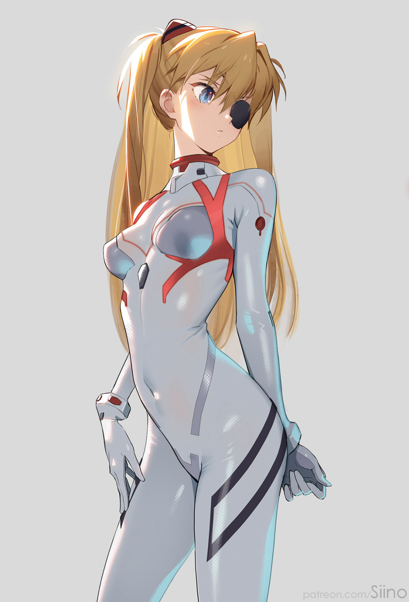

惣流·明日香·兰格雷，《新世纪福音战士》中最具人气的角色之一， 是兼具骄傲与脆弱的EVA二号机专属驾驶员， 也是被命运推着成长的孤独少女。她有着标志性的红发双马尾， 明艳的眉眼间藏着毫不掩饰的锋芒，德日混血的出身与精英教育背景， 让她自带清冷又张扬的异国气质。
明日香是天赋异禀的天才，14岁便完成大学课程，以“最强驾驶员”为傲， 常用“你白痴呀？”的斥责掩饰不耐， 用攻击性姿态武装自己——导演庵野秀明称她是“用攻击性保护自己”的角色。 她将自我价值完全寄托在战斗胜利上，渴望通过被认可填补内心空缺， 这份偏执源于童年创伤： 母亲的精神失常与自杀，父亲的背叛，让她习惯用高傲伪装脆弱。
她在机甲与心灵的战场上挣扎前行，经历过精神崩溃、同步率归零的绝望， 也在濒临毁灭的世界里完成自我觉醒，喊出“我可以一个人活下去”的宣言。 她的傲娇不是刻意人设，而是孤独者的自我防御， 外在的强势与内心的不安形成强烈反差，这份真实感让她跨越时光， 成为动漫史上最令人难忘的角色之一， 既让人嗔怪她的倔强，更让人心疼她的脆弱。